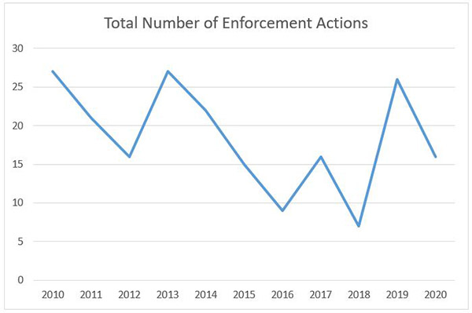
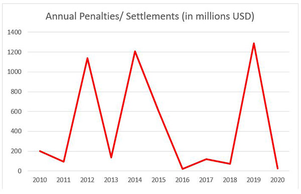

In too many ways to count, 2020 was an extraordinary year. As we move into 2021 with optimism for an end to the pandemic and better days ahead, we understand that the activity last year of the U.S. Department of the Treasury’s Office of Foreign Assets Control (“OFAC”) may not be the first thing on your mind. Yet, 2020 was an incredibly busy year in the sanctions world as the Trump Administration continued to rely on sanctions as perhaps its primary national security and foreign policy tool of choice. To refresh your recollection of the year, we are summarizing the most significant U.S. sanctions developments of 2020 — including enforcement and designations statistics, programmatic changes, and major lessons gleaned from enforcement actions — in a two‑part series. In this Part One, we summarize OFAC’s major actions and programmatic developments in 2020. Part Two will summarize the year’s OFAC enforcement actions and key lessons to be learned from them.
In 2020, OFAC assessed over $23.5 million in monetary penalties/settlements across 17 public enforcement actions. This is a steep decrease compared to 2019, which saw OFAC levy $1.3 billion in monetary penalties/settlements across 30 public enforcement actions. It might not be useful to put much stock in this comparison, however, given that OFAC’s 2020 operations were impacted by the COVID-19 pandemic, it was forced to handle an increasing number and scope of politically sensitive sanctions actions, and there were no “big ticket” enforcement cases, such as a major bank wire stripping case, resolved last year. As the sanctions frenzy of the waning months of the Trump Administration subsides, however, we expect OFAC’s future enforcement activity to look somewhere between the frenetic enforcement pace of 2019 and the slower rate in 2020 (partially because the 2019 enforcement numbers were the highest in a decade, if not longer, surpassing 2014’s $1.2 billion in fines across 22 public enforcement actions). The graphs below provide a visualization of OFAC’s 2020 enforcement activity, compared to previous years.


While OFAC’s enforcement activity was somewhat muted in 2020, other OFAC actions remained at record levels. OFAC made more than 700 sanctions designations in 2020. Iran was the most used OFAC program in 2020, with Iran-related designations accounting for over 40% of all 2020 designations. The number of delistings was also impressive, with OFAC removing over 200 sanctions designations throughout the year. For a comparison perspective of OFAC activity over the years, we invite you to check out a useful and interesting tool Sanctions by the Numbers, maintained by our friends at the Center for New American Security.
i. Hong Kong
Recent political and legal developments and social unrest in Hong Kong, watched with intense interest by much of the world, led Congress to pass the Hong Kong Autonomy Act (“HKAA”) in July 2020. The act authorizes sanctions on individuals contributing to those political and legal developments and secondary sanctions on foreign financial institutions engaged in significant transactions with such individuals. On the same day that President Trump signed the HKAA into law, he also issued Executive Order (“E.O.”) 13936, authorizing sanctions on foreign persons determined to be involved in activities undermining the autonomy of Hong Kong, such as the enforcement of Hong Kong’s new National Security Law. The HKAA and E.O. 13936 represent largely overlapping authorizations for sanctions relating to Hong Kong. As explained below, however, one area where they differ is the authorization within the HKAA to impose secondary sanctions on foreign financial institutions; E.O. 13936 contains no such authority.
Specifically, the HKAA requires the Administration to issue two reports to Congress, which must be followed by sanctions on identified parties:
If a foreign financial institutions is eventually listed in a future Section 5(b) report, the President is then required to impose at least five sanctions on the offending financial institution within a year of the report and impose the full menu of ten secondary sanctions within two years of the report.
In conjunction with the HKAA sanctions framework outlined above, E.O. 13936 authorizes blocking sanctions against parties that engage in a variety of practices that “undermine democratic processes or institutions of Hong Kong.” To date, there have been four rounds of sanctions designations under E.O. 13936, which render a designated person a Specially Designated National (“SDN”). While there is no mandate that persons designated under E.O. 13936 also be included in the HKAA Section 5(a) report, all of the individuals in the October 2020 Section 5(a) report were already subject to E.O. 13936 sanctions. Thus, it remains possible that the additional E.O. 13936 designations not included in the initial Section 5(a) report could be added to future 5(a) reports.
Unlike the HKAA, the E.O. does not require the issuance of a report prior to the imposition of sanctions—sanctions under the E.O. can be imposed at any time and without prior notice. On the other hand, the HKAA directs both the Treasury Secretary and the Secretary of State to update their respective reports “in an ongoing manner,” which must be resubmitted “to the extent practicable” (i.e., not an absolute requirement). At a minimum, an annual report is due on March 31, 2021. Because updates to HKAA and E.O. 13936 sanctions can happen at any time, it is critical to observe closely any Hong Kong-related developments.
ii. Pentagon List
Prompted to reevaluate a two‑decade‑old statute (the FY 1997 National Defense Authorization Act) as an unused tool in confronting what the U.S. government regards as China’s strategy of “Military-Civilian Fusion,” in June 2020 the U.S. Department of Defense developed and published a list of names of Chinese military-owned companies operating in the United States. This so‑called “Pentagon List” itself was accompanied by no specific prohibitions but has since been operationalized by a new E.O., E.O. 13959, to restrict future U.S. investment in such companies. Specifically, E.O. 13959 prohibits U.S. persons from investing in the publicly traded securities of listed “Chinese Military Companies” (or any securities derivative of, or that provide investment exposure to, such publicly traded securities). Several subsequent rounds of designations have added additional companies to the Pentagon List.
Relatedly, OFAC established and now maintains a non-SDN Chinese Military Companies List (“CMC List”), which largely mirrors the Pentagon List in purpose, scope, and effect. The CMC List was designed to provide clarity as to which entities on the Pentagon List face the investment ban. Both the Pentagon List and the CMC List are given operational effect by E.O. 13959, as amended by E.O. 13974. Together, the E.O.s prohibit U.S. persons from investing in the publicly traded securities of listed “Chinese Military Companies” (or any securities derivative of, or that provide investment exposure to, such publicly traded securities). The scope of the restrictions under E.O.s 13959/13974 is, therefore, limited, as compared to other U.S. sanctions and export control programs. Whereas traditional OFAC sanctions restrict nearly all transactions with a sanctioned party, the restrictions on Pentagon List and CMC List companies trigger only a ban on U.S. persons investing in the securities of the listed parties.
While OFAC has published several rounds of FAQs on its new sanctions program, it still might take some time for industry to gain clarity on the precise scope of permissible and prohibited transactions, particularly in the months ahead, as the Biden Administration formulates its strategic objectives and how best to achieve them. One point of interest to many market participants is how OFAC intends to deal with “close matches” to entities listed on the CMC List. So far, OFAC has decided to postpone restricting securities of “close-matches” until it identifies how best to handle this issue. While many questions remain, global financial institutions should take steps to carefully evaluate transactions involving the purchases of securities of the named companies where there may be a U.S. nexus, especially since foreign financial institutions could be impacted if they manage or hold any index or mutual funds for U.S. investors that hold the underlying securities of any listed entity.
iii. Matters related to Xinjiang
Continuing its human rights-related pressure on China, OFAC added Xinjiang Production and Construction Corps (“XPCC”) to its List of Specially Designated Nationals and Blocked Persons (“SDN List”) on July 31, 2020, pursuant to the Global Magnitsky Human Rights Accountability Act (22 U.S.C. § 2656) and E.O. 13818.
OFAC sanctioned XPCC for what the U.S. Government concluded were serious concerns related to labor and human rights in China’s Xinjiang Uyghur Autonomous Region (“XUAR”). OFAC’s targeting of XPCC is a major development as XPCC and its subsidiaries are pervasive not only in the XUAR, where they employ a significant portion of the population, but also in global textile supply chains, where they are integral players. In fact, XPCC is generally understood to account for approximately a third of all cotton production in China.
XPCC’s designation as an SDN means that all U.S. persons (any U.S. citizen, permanent resident alien, entity organized under the laws of the United States or any jurisdiction within the United States (including foreign branches), or any person physically located in the United States) are banned from engaging, directly or indirectly, with XPCC and its majority-owned subsidiaries unless granted specific authorization by OFAC. Similarly, non-U.S. individuals and entities cannot engage in a transaction with an SDN if there is a U.S. nexus (that is, involves a U.S. person or U.S. goods or services, including use of the U.S. financial system or U.S. dollar, even as an exchange currency).
In addition to the OFAC designations, the U.S. Department of Commerce’s Bureau of Industry and Security (“BIS”) added 11 companies to its Entity List on July 2020 for their alleged involvement in human rights abuses in Xinjiang. As a result, U.S. and non-U.S. persons are prohibited from transferring any items (including commodities, hardware, software, or technology) subject to the Export Administration Regulations (“EAR”) to the BIS-designated Entity List parties. The restrictions broadly apply to any person dealing in goods, software, and technology (collectively, “items”) in the United States, U.S.-origin items, certain items manufactured outside the United States that contain sufficient U.S.-origin content, and certain items manufactured using U.S. technology.
Also, the U.S. Department of Homeland Security’s U.S. Customs and Border Protection (“CBP”) announced in early December that CBP personnel at all U.S. ports of entry will detain shipments containing cotton and cotton products originating from XPCC. The Withhold Release Order applies to all cotton and cotton products produced by the XPCC and its subordinate and affiliated entities, as well as any products that are made in whole or in part with or derived from that cotton, such as apparel, garments, and textiles.
Taken together, U.S. sanctions, export restrictions, and customs actions on the XUAR raise significant legal and reputational risks. Thus, companies doing business in the region should adopt rigorous due diligence procedures to identify business partners that may be ultimately owned by the XPCC to prevent violations of the existing and potential new U.S. sanctions.
iv. South China Sea
An area for potential new sanctions on China moving forward concerns its activities in the South China Sea. The stage is set for increased focus as the South China Sea and East China Sea Sanctions Act, introduced in the U.S. Senate in May 2019, would impose potential sanctions against “any Chinese person that contributes to construction or development projects, including land reclamation, island-making, lighthouse construction, building of base stations for mobile communications services, building of electricity and fuel supply facilities, or civil infrastructure projects, in areas of the South China Sea contested by one or more members of the Association of Southeast Asian Nations.”
Although OFAC has not yet imposed any sanctions with respect to South China Sea activities, the U.S. Departments of Commerce and State have already taken steps to respond to China’s actions in the South China Sea. Specifically, Commerce added numerous Chinese companies, including certain subsidiaries of the Chinese Communications Construction Company to the Entity List for their role in strategic developments in the South China Sea. It is prohibited to provide to an Entity List company any commodities, hardware, software, or technology subject to the EAR. The Department of State similarly imposed visa restrictions on Chinese persons “responsible for, or complicit in, either the large-scale reclamation, construction, or militarization of disputed outposts in the South China Sea, or the PRC’s use of coercion against Southeast Asian claimants to inhibit their access to offshore resources.” Given the strong stance already shown by Commerce and State, it would not be a surprise if Congress passed the above-mentioned legislation and OFAC followed suit with its own sanctions, particularly after the Biden Administration completes its whole-of-government review of its posture toward China.
In 2020, the Trump Administration continued to increase sanctions against Cuba, which had previously been loosened under the Obama Administration, in a number of ways.
i. No Cuban Rum or Cigars
In September 2020, the Trump Administration imposed additional sanctions on Cuba in order to further limit the Cuban regime’s sources of revenue. In 2019, the Trump Administration implemented sanctions measures targeting travel from the United States to Cuba. In keeping with the spirit of these earlier sanctions, in early fall 2020, OFAC further amended the Cuban Assets Control Regulations (“CARC”) to prohibit the importation of Cuban-origin alcohol and tobacco products into the United States. As discussed in an earlier alert on this issue, OFAC further amended the CARC to impose restrictions on professional research and professional meetings that would be held in Cuba, requiring that these be reviewed on a case-by-case basis and authorized via license. Additionally, OFAC imposed additional restrictions on public performance, clinics, workshops, athletic and other competitions, and exhibitions held in Cuba by removing the general authorization for such events and activities. Consequently, general licenses authorizing athletic‑related travel can only be granted in connection with amateur or semi-professional athletes or athletic teams as provided for in § 515.567(a).
ii. Making a List, Checking it Twice
OFAC also amended the CACR to prohibit any person subject to U.S. jurisdiction from “lodging, paying for lodging, or making any reservation for or on behalf of a third party to lodge, at any property in Cuba that the Secretary of State has identified as a property that is owned or controlled by the Cuban government, a prohibited official of the Government of Cuba, as defined in 31 C.F.R. § 515.337, a prohibited member of the Cuban Communist Party, as defined in 31 C.F.R. § 515.338, a close relative, as defined in 31 C.F.R. § 515.339, of a prohibited official of the Government of Cuba, or a close relative of a prohibited member of the Cuban Communist Party.” This ban on accommodations was instituted alongside the creation by the U.S. State Department of the Cuba Prohibited Accommodations List (“CPA List”), which includes a list of names, addresses, and other identifying details of properties subject to this provision, including 433 properties owned or controlled by the Cuban regime or well-connected insiders. Note that the CPA List supplements, but does not supersede, the Cuba Restricted List currently maintained by the State Department.
Throughout 2020, the Trump Administration also continued its “maximum pressure” campaign against Iran, though with some consideration and accommodation for Iran’s struggle with COVID‑19.
i. Secondary Sanctions
On June 5, 2020, OFAC issued four frequently asked questions (“FAQs”) that define key terms connected to the secondary sanctions that had been added to the Iran sanctions program earlier in 2020. As discussed in an earlier alert on this topic, the new FAQs define the construction, mining, manufacturing, and textile sectors of Iran’s economy as subject to secondary sanctions. OFAC also made exceptions for sales of humanitarian, safety, and sanitation-related goods and services to Iranian persons who are not SDNs either operating in these sectors or transacting in goods or services used in association with these sectors. These qualifications build on OFAC’s attempts to minimize the impact of U.S. sanctions on Iranian companies and individuals trying to obtain medical supplies and safety equipment needed to combat the COVID-19 pandemic.
As background, on January 10, 2020, President Trump had issued E.O. 13902, which broadened secondary sanctions as described below, and authorized the Secretary of the Treasury to add additional sectors as he saw fit. The expanded secondary sanctions encompassed transactions involving the construction, mining, manufacturing, and textiles sectors, and permit OFAC to sanction non-U.S. individuals and entities that operate in or knowingly engage in a “significant” transaction for the sale or supply to or from Iran of “significant” goods or services “used in connection with” the aforementioned Iranian sectors. E.O. 13902 also permits OFAC to sanction non-U.S. financial institutions that facilitate “significant” transactions involving these sectors. The FAQs issued by OFAC define in greater specificity what it considers to be the construction, mining, manufacturing, and textiles sectors of Iran’s economy and expand upon what it considers to be goods and services used in connection with each of these sectors.
Additionally, the FAQs explain that OFAC will not issue sanctions for activity in Iran relating to “manufacturing medicines, medical devices, or products used for sanitation, hygiene, medical care, medical safety, and manufacturing safety, including soap, hand sanitizer, ventilators, respirators, personal hygiene products, diapers, infant and childcare items, personal protective equipment, and manufacturing safety systems, solely for use in Iran and not for export from Iran.” While the FAQs do not fully define the term “significant” in the context of relevant transactions, OFAC’s list of factors used to determine transactional significance in other similar contexts is likely a helpful starting point. Finally, the FAQs clarify that OFAC will not regard sales of humanitarian, safety, and sanitation-related goods and services to non-SDN Iranian persons as operating in these sectors or transacting in goods or services used in connection with the aforementioned sectors. Taken together, the FAQs help to ensure that U.S. sanctions do not prevent the provision of necessary materials to Iran that are needed to support the country’s efforts to combat COVID-19.
ii. Financial Sector
On October 8, 2020, U.S. Treasury Secretary Steven Mnuchin identified the Iranian financial sector as subject to the sectoral sanctions instituted under E.O. 13902. As discussed in an earlier alert on this development, OFAC consequently ratcheted up its sanctions against 18 major Iranian banks identified as subject to secondary sanctions on the agency’s SDN List. In keeping with the Trump Administration’s “maximum pressure” campaign against Iran, these additional sanctions intend to further isolate Iran’s stressed financial sector and threaten sanctions against non-U.S. companies that do business with Iranian financial institutions or the Iranian financial sector.
These expanded secondary sanctions mainly target non-U.S. companies that continue to engage with Iranian financial institutions. However, their impact is qualified by the previous exceptions made for the humanitarian trade in certain agricultural commodities, food, medicine, and medical devices, including certain items necessary to combat the COVID-19 pandemic, which apply in this case, as well. Additionally, OFAC had granted a 45-day wind-down period, which expired on November 22, 2020, to allow non-U.S. persons engaged in transactions with the Iranian financial sector to conclude those transactions without risk of exposure to sanctions. Finally, for U.S. persons continuing to engage in the limited areas of humanitarian or other authorized trade with Iran, OFAC issued a new general license, General License L, to clarify that such transactions and activities previously authorized for U.S. persons would be allowed to continue under the new sanctions. It is likely that the impact of the expanded Iranian financial sector sanctions on U.S. persons will be fairly minimal due to General License L, though for non-U.S. companies doing business outside the United States, the effect could be considerable.
2020 saw the continuation of the Trump Administration’s attempts to prevent the completion of Russian pipeline projects, specifically the Nord Stream 2 and TurkStream pipelines. These pipelines, which originate in Russia, are intended to bypass an existing pipeline through Ukraine to reach the rest of Europe. Previous sanctions on the pipelines, including those imposed under the 2020 NDAA, delayed the projects considerably, but its construction chugged along. In what could be a last attempt at halting the projects, the U.S. government took several steps in 2020 to try to stop them once and for all.
i. Art Advisory
At the end of October, OFAC published an advisory aimed at the niche industry of “high-value artwork.” As we explained at the time, the advisory highlighted the potential sanctions risks lurking in the world of fine art (with “particular caution” urged for dealings in artwork worth over $100,000). After observing sanctions evasion in this space (representative examples of which were provided in the advisory), OFAC issued the advisory to put art dealers and other parties engaging in art-related transactions on notice that sanctioned parties often view high-value artwork transactions as avenues to access the U.S. market and financial system in contravention of OFAC regulations. In issuing the advisory, OFAC warned art galleries, museums, private collectors, auction companies, agents, brokers, and other parties involved in the “high-value artwork” market that they face civil liability for direct or indirect transactions with sanctioned parties. As it so often does to entities facing sanctions risk, OFAC urged relevant parties to adopt risk-based compliance programs to mitigate their exposure to sanctions-related violations and conduct risk-based due diligence on potential counterparties.
In the same advisory, OFAC also clarified that it does not view statutory exemptions for “informational materials” (found in the International Emergency Economic Powers Act and the Trading with the Enemy Act (see 50 U.S.C. § 1702(b)(3); 50 U.S.C. § 4305(b)(4))) as applying to high-value art transactions involving sanctioned parties when the artwork functions primarily as an investment asset or medium of exchange as opposed to its inherent artistic function.
ii. Ransomware Advisory
Also in October, OFAC issued an advisory detailing potential sanctions risks associated with ransomware payments related to malicious cyber-enabled activities. As we analyzed previously, and much to the frustration of ransomware attack victims, the advisory cautions victims of ransomware attacks and ransomware-related services providers to consider the risk of civil sanctions liability when deciding on a course of action. The message from OFAC is clear—pay at your own risk. Yet, this stance leaves victims of ransomware attacks in a Catch-22: if you do not pay the ransom, you could go out of business, but if you do make the payment to a sanctioned party or a party related to a sanctioned party, you expose yourself to OFAC liability.
The advisory also highlights the critical need to have a robust sanctions compliance program in place. It describes factors OFAC will consider when determining an appropriate enforcement response to an apparent sanctions violation via a ransomware payment, including the existence, nature, and adequacy of a sanctions compliance program. The advisory also encourages financial institutions and other companies that engage with victims of ransomware attacks to report such attacks to and fully cooperate with law enforcement.
As detailed in the advisory, OFAC will now review license applications involving ransomware payments demanded as a result of malicious cyber-enabled activities on a case-by-case basis with a presumption of denial.
iii. Maritime Advisory
In an effort to demonstrate its focus on the maritime industry, on May 14, 2020, the U.S. Department of State, OFAC, and the U.S. Coast Guard issued an advisory providing parties engaged in the maritime industry with information and recommendations to counter illicit shipping practices and sanctions evasion techniques. Specifically, the advisory provided guidance and best practices to varied actors within the maritime industry: maritime insurance companies; flag registries; port state control authorities; shipping industry associations; regional and global commodity trading, supplier, and brokering companies; financial institutions; ship owners, operators, and charterers; classification societies; vessel captains; and crewing companies.
The advisory was much anticipated, as OFAC circulated draft versions to representative industry players in the months leading up to its publication. After much concern over the potential scope of the advisory and the compliance recommendations proposed therein, the USG appears to have incorporated some industry feedback before issuing the final version of the advisory, which appears more balanced than the circulated drafts. With that being said, certain provisions in the advisory are potentially quite burdensome, such as its Know Your Customer (“KYC”) requirements and beneficial ownership diligence obligations. MoFo’s National Security team spoke with major players within the maritime industry, who suggested that they expect the industry to employ a “wait and see” approach to assess the advisory’s ultimate impact.
In a provocative and unusual move, President Trump issued an Executive Order on June 11 threatening sanctions against individuals working for the International Criminal Court (“ICC”). The sanctions include asset freezes and travel bans, with the travel restrictions also applying to “immediate family members” of designated persons. So far, the Trump administration has designated two individuals for sanctions under this authority: ICC prosecutor Fatou Bensouda, and Phakiso Mochokhoko, head of the ICC’s Jurisdiction, Complementarity, and Cooperation Division.
The ICC is an international tribunal established in The Hague, Netherlands in 2002 to investigate and prosecute individuals charged with genocide, war crimes, and crimes against humanity. Under President Clinton, the United States signed the Rome Statute, the treaty establishing the ICC, but it was subsequently never sent to Congress for ratification. Thus, the United States is not a party to the Rome Statute, meaning it is not a party to the ICC. In addition to the United States, Russia, China, India, Saudi Arabia, Turkey, and the Philippines are also not parties to the Rome Statute and the ICC—not exactly a list of gold standard human rights proponents.
As we outlined in a previous alert, under the E.O., “blocking” sanctions—asset freezes and prohibitions on any further dealings—are authorized against any foreign person determined by the Secretary of State, in consultation with the Secretary of the Treasury and the Attorney General, to:
The E.O. also authorizes travel restrictions. Specifically, any person sanctioned under the criteria above and their immediate family members are banned from entering the United States.
2020 was an extraordinary year in many respects, including in the world of sanctions. We expect 2021 to be a similarly compelling year as the Biden Administration hits the ground running. MoFo’s National Security Practice looks forward to keeping you up-to-date on all the important developments you need to know throughout the upcoming year.
Liv Chap, a Law Clerk in Morrison & Foerster LLP’s D.C. office, and Raymond Rif, a Legislative and Policy Specialist, contributed to this alert.
Disclaimer
Unsolicited e-mails and information sent to Morrison & Foerster will not be considered confidential, may be disclosed to others pursuant to our Privacy Policy, may not receive a response, and do not create an attorney-client relationship with Morrison & Foerster. If you are not already a client of Morrison & Foerster, do not include any confidential information in this message. Also, please note that our attorneys do not seek to practice law in any jurisdiction in which they are not properly authorized to do so.